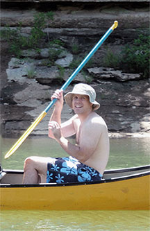

Our GuidesWe have four of the best river guides you will ever find — Buster, Tucker, Max, and Scarlett. Buster has been with us for fourteen years and was born and raised here on the river. Tucker joined us two years ago "from off" (somewhere up north), but we've managed to make a country boy out of him! Max and Scarlett are actually distant cousins and joined us after they graduated from college last year. They're never happier than when they're out on the water floating and fishing. Each of our guides will show you a great time on the river.
Our guides will pack your supplies, shuttle you to the put-in point, maneuver the raging rapids for you, and then make sure someone is waiting at the take-out point to shuttle you back to the store. They haven't lost a customer yet! Give us a call and we'll set up a date with any of these good people. Here's a photo of Buster showing off his stuff. The river is always faster and higher in the spring. If you want to take it a little slower, come visit us in the summer or fall. Leave your good camera at home, though, no matter what the time of the year. You may get wet! Life jackets are provided and we require that you wear them while on the water. Safety is always our prime concern.